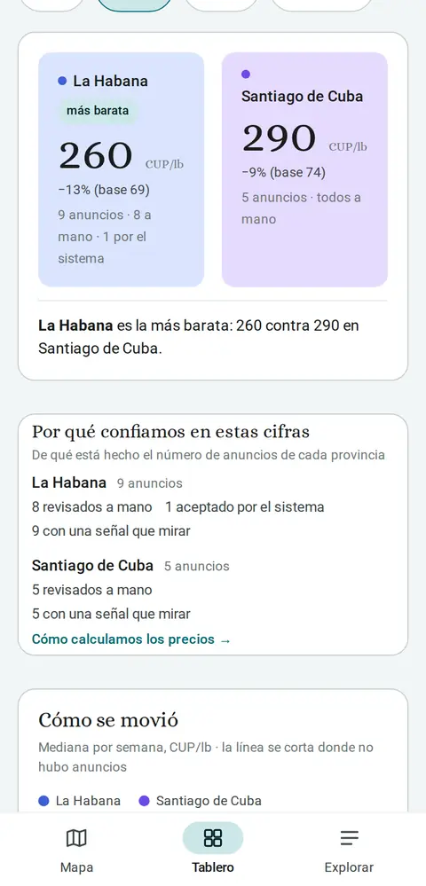

Guani lee los anuncios donde ya se vende, los pasa a una misma unidad y te los enseña con su cuenta. Una máquina lee; una persona supervisa.
Ver los precios de hoy
Una máquina lee los anuncios y una persona supervisa. Estos son los cuatro pasos.
Lee los grupos y canales donde ya se vende. Nadie tiene que escribirle nada.
Un asistente saca producto, precio, cantidad y provincia, y lo lleva todo a la misma unidad y moneda.
Aparta lo que no es un anuncio de precio y frena lo dudoso. Lo difícil lo decide una persona; lo claro, el sistema lo acepta y una persona lo audita después.
Rango, mediana y cuántos anuncios hay detrás, separando los revisados a mano de los aceptados por el sistema.
De día, el resto de la página no cambia: las mismas tarjetas claras de hoy.